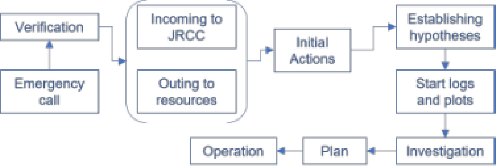

Project Description
Planning and allocation of resources in search and rescue operations is critical and complex. Those tasks require consideration of several factors such as the nature of the emergency, location, people involved, and weather conditions.
In this paper, we investigate the specific requirements for effective decision-making and planning in search and rescue operations in Norway.
These requirements were determined using data gathered through expert interviews and analysis of mission reports.
We propose a framework designed for search and rescue decision support, including its architecture and components.
We also discuss the implementation of the service layer. We used information retrieval methods, i.e. BM25 and TF-IDF, for distance computation and compared their performance using k-means and hierarchical agglomerative clustering methods.
The evaluation through silhouette score and Davies-Bouldin score shows that the hierarchical agglomerative clustering using BM25 performs well for the given dataset.
The search and rescue mission reports published by the Norwegian Safety Authority were used as a dataset.
Skills: NLP, Information Retrieval, BM25, TF-IDF,
Link to Paper